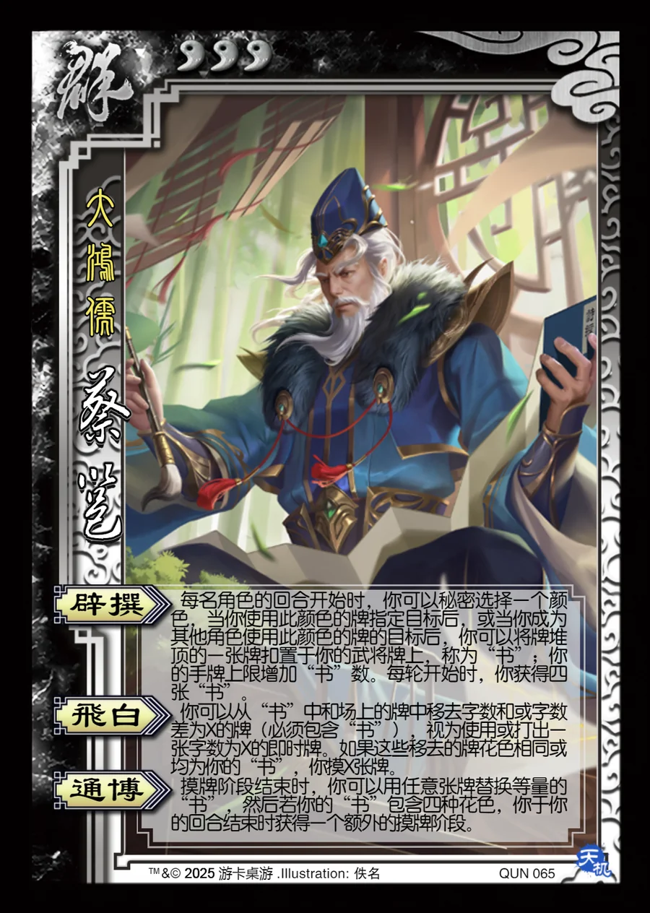

点击卡面查看大图
群
蔡邕
♥3大鸿儒
辟撰
每名角色的回合开始时，你可以秘密选择一个颜色，当你使用此颜色的牌指定目标后，或当你成为其他角色使用此颜色的牌的目标后，你可以将牌堆顶的一张牌扣置于你的武将牌上，称为“书”；你的手牌上限增加“书”数。每轮开始时，你获得四张“书”。
飞白
你可以从“书”中和场上的牌中移去字数和或字数差为X的牌（必须包含“书”），视为使用或打出一张字数为X的即时牌。如果这些移去的牌花色相同或均为你的“书”，你摸X张牌。
通博
摸牌阶段结束时，你可以用任意张牌替换等量的“书”，然后若你的“书”包含四种花色，你于你的回合结束时获得一个额外的摸牌阶段。